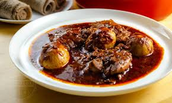

Doro wet

Ethiopian Doro wet
Doro Wet is Ethiopia's national chicken stew, renowned for its rich,
spicy flavor from berbere spice and niter kibbeh (spiced clarified butter).
Slow-cooked with caramelized onions, ginger, and garlic, it's traditionally garnished
with hard-boiled eggs and served with injera.
Ingredients
- Chicken
- Berbere Spice Blend
- Niter Kibbeh (Spiced Clarified Butter)
- Hard-Boiled Eggs
Steps
- Clean and cut chicken. Marinate in lemon/vinegar, rinse.
- Finely chop red onions. Cook in dry pot until deeply caramelized.
- Add niter kibbeh to onions. Stir in garlic and ginger. Add berbere, cook into paste.
- Add chicken, coat well. Add water/stock, boil, then simmer covered until tender.
- Hard-boil and pierce eggs. Add eggs to stew 10-15 mins before serving. Adjust salt.
- Serve hot with injera.
Home